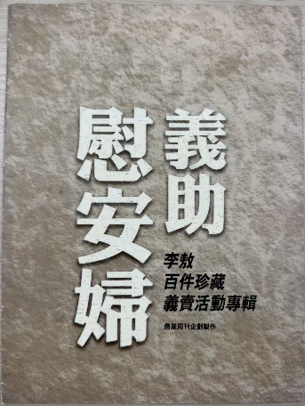

義助慰安婦
李敖百件珍藏展覽會
—— 李敖百件珍藏義賣活動李敖百件珍藏義賣會
- 地點：台北市國父紀念館 三樓長廊
- 時間：一九九七年 8/23（六）起∼8/29（五）止，每天 9:00-17:00
- 歡迎免費自由入場
本頁摘要 連結到其他頁
- 地點：國父紀念館 大會堂
- 時間：一九九七年八月三十一日（日）14:00 開始
- 歡迎免費自由入場
緣 起
二次大戰期間，美國國防當局，邀請人類學家班妮迪（Ruth Fulton Benedict）研究日本，她寫下「菊花與劍：日本文化型模」（The Chrysanthemum and the Sword: Patterns of Japanese Culture）一書，認為日本人有高雅如菊花、殘暴如劍兩面性格。不過，班妮迪有所不知的是：日本人殘暴倒是真的，但高雅則未必。 高雅需要大智慧，可是，日本人的兩種本質，扼殺了他的大智慧：第一是他的「武士本質」，第二是他的「町人本質」，前者使他欺負弱小，後者使他眼光狹小，二者結合後，使他進不能成為「好的勝利者」，退不能成為一個「好的失敗者」（Good Loser）。這從二次世界大戰的勝敗前後，他毫無高雅如菊花可知，以他對婦女為例，在進入南京時候，外籍的紅卍字會副會長有記錄如下：
「對於女人，日本兵的行動更壞，是文明世界所夢想不到的。日本對女人的嗜好，到了令人難以置信的程度。」
「一次，日本兵以三輛卡車，運婦女到兵營去，逐一強姦。我阻止他們，無效。造些婦女，由十二、三歲至四、五十歲。我曾目擊日兵的強姦。有時候，日兵在沐浴處強姦中國的婦人。後來，我們走進去，我看見沐浴處的裸體女人在哭。」
「又一次，我同馬基氏到南門東新開路第七號。發現該家十一人被殺，三人被強姦。婦人之中，兩人十四歲，一人十七歲，日軍於強姦後，把東西塞入陰戶中。另一年輕的女子，在桌上被強姦，桌上有血。又有一家人，乘船過河。至河中，被日兵發現。日兵檢查船內，發現青年女子，就在老父與丈夫面前強姦。丈夫非常憤怒，被日兵所殺，老父和女兒，也同投河溺死。」
這就是日本人如菊花的高雅！再看外籍教授的記錄：
「就是在安全地帶，中國婦女被日本兵強姦的，每天最少有八千件之多。」我的一個德國同事，任職『國際安全地帶委員會』，他親眼看見日軍姦殺暴行達兩萬次之多。特別是在南京大學校園裡的日本兵，竟在光天化日之下，姦殺九歲的女童及七十六歲的老祖母。而且這些姦殺事件，大約有三分之一是在白天進行。尤其有不少姦殺事件，竟發生在大馬路上，其情其景真是衣冠禽獸。」
這就是日本人如菊花的高雅！
日本人對婦女，幹出了全世界任何國家都幹不出來的壞事，還美其名曰慰安婦的「慰安」。在這種標準下慰安婦其實有兩種，一種是上面外籍人士筆下的「沒列入編制的慰安婦」，她們的被蹂躪是一時的；另一種是「列入編制的慰安婦」，她們的被蹂躪是長久的，就是今天亞洲各國所關心的一種，她們一生，青春不堪問，老境卻堪憐，並且在五六十年的風霜後，所剩無幾，在台灣僅有三四十人存活著。 在這時候，在世界公議的壓力下，日本人乃想出躲過國家責任的花樣，由所謂民間團體丟出五十萬，分別與每個慰安婦「私了」，非但二次羞辱慰安婦，並且用這一「成交」，來矇混侵略者「戰爭犯罪」的真相，用心至為卑鄙可惡。
自來婦女不幸淪為妓女的，或為家庭、或為窮困、或為救夫、或為援子，她們的捨身，多少有正面的意義，但被日本人強迫做慰安婦，意義是負面的，日本人毀了她們一生，在生命終老的前夜還要利用剩餘價值，「私了」以平世界公議，我們實在不能再沉默、再坐視了，我們要舉辦這次活動，援助慰安婦，使她們雖然屈辱了青春、屈辱了一生，但在生命盡頭，終於有了正面的意義，讓她們告訴世界、告訴人類、告訴歷史： 日本人既不是「好的勝利者」，也不是「好的失敗者」，日本人失敗了還如此卑鄙可惡，他們絕非高雅的菊花，「終戰」五十年，他們終於還是站在那裡的衣冠禽獸！
李敖
「了解她們內心的感受後，心中的痛苦，錐心刺骨。
如果我是這樣的婦女，我早已自殺，沒有勇氣活到今天……」
為慰安婦奔走出力的 王清峰律師沉痛地感嘆，
六年以來，面對日本政府的無恥、我國政府的無能，
慰安婦仍然末獲得應有的賠償。
現在，日本政府竟然假手民間團體，提供微薄「慰撫金」，
意圖打發了事，規避正式的道歉和賠償責任。
五十多年前，這塊土地上的人民迫於無奈，無法保護台灣人的女兒，
任日本人強徵做慰安婦，被日軍禽獸般的姦淫摧殘。
五十多年後，這塊土地上的人民已然富足自主，
怎可任她們再次被日本人侮辱？
出賣尊嚴接受形同遮羞費的微薄「慰撫金」，輕饒日本犯下的滔天罪行。
今天，生長在這塊土地上的您，不能再沉默退縮，
應該站出來阻止台灣人的女兒再被人任意出賣羞辱。
熱愛台灣的李敖已經挺身而出了，散盡冢當，捐出100項藝品珍藏，
希望以義賣及募款所得，資助窮困潦倒的老阿媽們能向日本人說不。
為了善盡媒體公器的職責，商業周刊特別製作
「義肋慰安婦——李敖百件珍藏義賣活動」專輯，
希望大家一起來採取行動，幫助老阿媽們拒絕出賣尊嚴，
為日本政府的正式道歉和賠償而抗爭到底。